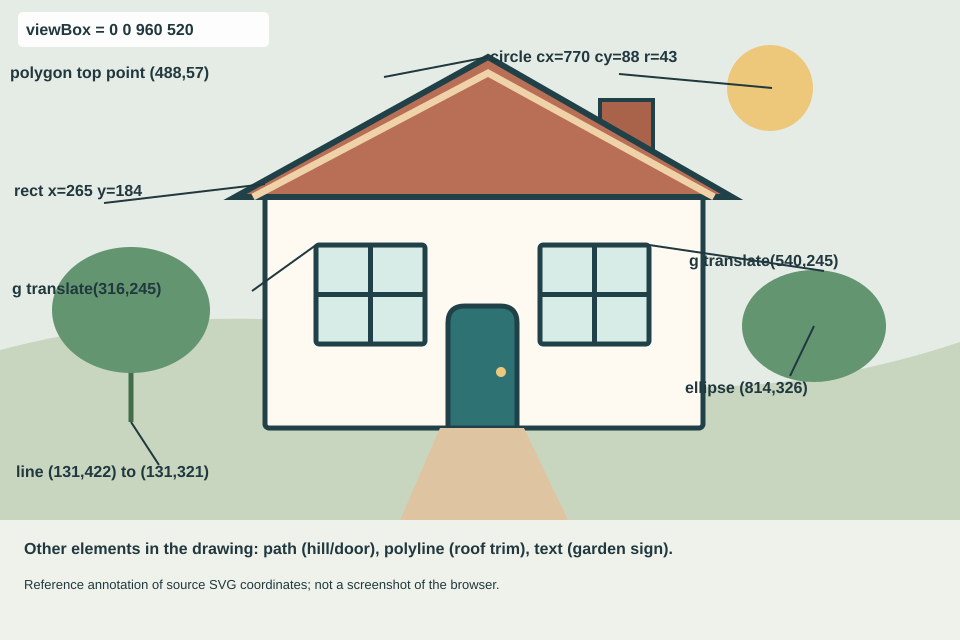

Exercise 4.1 / SVG primitives
A small house, drawn with coordinates.
I used SVG shapes rather than an image editor. The two windows share styling inside a group and are positioned with translate().
01 / The drawing
Figure 1. A house with rectangles, a polygon, circles, ellipses, lines, a polyline, paths, text and a grouped pair of windows.
02 / Coordinate notes
This annotated drawing identifies coordinates used in the SVG source. Positions start at the top-left of the 960 × 520 viewBox.

Figure 2. Coordinate annotations for the drawing. The diagram is an SVG annotation rather than a browser screenshot.
03 / Browser inspection
The group is in the DOM.
The g#house element is part of the page's SVG DOM. To inspect the actual nodes, right-click a window and choose Inspect in the browser developer tools. The window group is g#windows, with two child groups translated to different locations.
The code above is read from the live SVG element on this page, rather than pasted as an image of DevTools.